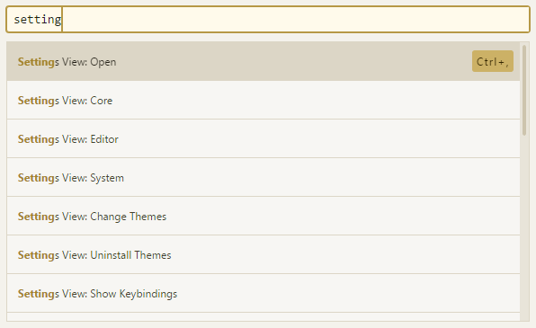

通读了一遍Atom飞行手册的第一章快速入门以及第二章使用Atom，做了简单笔记，方便以后查阅。
命令面板
Atom的操作方式是以命令为基础的，不管是菜单功能还是内置的一些快捷键本质上都是执行Atom命令。而命令面板可以直接去执行Atom具备的所有命令，包括但不限于菜单栏上的功能以及快捷键的功能。打开命令面板的方式为快捷键 cmd-shift-p，在命令面板上带搜索功能的框中可以输入键字即可搜索到相应命令，点击鼠标左键或者按下回车就可以执行命令。
如下图就是打开atom设置界面的命令:

当然也可以根据右侧的提示用快捷键Ctrl+,来打开
设置界面
既然已经打开了设置界面，那就简单说说设置界面中一些有意思的
Core Settings
核心设置，保持默认就行
- Allow pending Pane Items //这个功能很有意思，它能让你在单击一个文件的时候不完全打开它，只是生成一个预览界面，会自动被后面打开的文件给替换。但是如果双击打开或者在预览界面编辑它，它就会在tab上面常驻，需要手动关闭。这在手工查找文件内容的时候很实用
- Auto Hide Menu Bar //自动隐藏菜单栏，屏幕小的话可以选上，按下alt键就会出来了
- File Encoding //Atom的默认编码方式是utf8, 很奇怪这个设置是放在这里而不是Core Settings里面
Edit Settings
可以设置字体，行高，默认行宽等
- Atomic Soft Tabs //行前tab长度的空格也当做tab来处理
- Show Invisibles //显示回车、空格、tab这些特殊字符，便于编辑Python等对空格敏感的语言
- Scroll Past End //文档末尾是否可以继续往上拉，对于在编辑时需要按很多回车强迫文章末尾上拉的我来说很有用。
- Show Cursor On Selection //不喜欢选上以后后面还有一个光标在闪啊闪，所以取消选择了。
- Show Indent Guide //缩进指示符，写python代码很有用的
- Show Line Numbers //显示行号
- Tab Type //tab类型，auto为自动检测，soft为用空格代替tab，hard为tab原始输入
- Soft Tabs //Tab Type设置成auto时，当系统无法检测到文档所用tab类型时，默认用空格代替tab
- Tab Length //tab键的宽度，默认是2，个人习惯是4，一般建议html设成2
- Soft Wrap At Prefered Line Length //单行长度超过设置值时就自动换行，如果是写代码的话就不要选了，应该主动做到行宽不超过设置长度，如果是写文章的话就可以选一下，以方便查看。
System Settings
下面的几个设置都挺有用的可以都选上
- Register as file handler //在打开方式中增加Atom
- Show in file context menus //可以右击用Atom打开文件
- Show in folder context menus //可以右击用Atom打开文件夹
Keybindings
这里可以查看所有的快捷方式，可以在keymap.cson文件中重定义这些
格式如下
'atom-text-editor':
'enter': 'editor:newline'
'atom-workspace':
'ctrl-shift-p': 'core:move-up'
'ctrl-p': 'core:move-down'
Packages & Themes
包和主题的管理
Atom的所有功能都是由包来实现的，所有已经按照的包列在包的设置界面中，可以在这里卸载包，设置单个包的属性等
Atom的主题也可以自由定制，在这个页面可以选择以及设置主题，个人喜欢UI Theme:OneLight 以及Syntax Theme:Solarized Right。
install
安装
如果想要安装包或者新的主题，可以在这里搜索并且安装。
常用快捷键&命令
罗列下常用的一些快捷键及命令
| 快捷键 | 命令 | 注释 |
|---|---|---|
| ctrl-\ | tree-view:toggle | 隐藏或重新显示目录树 |
| ctrl-0 | 可以将焦点切换到目录树 | |
| ctrl-shift-o | 打开目录 | |
| ctrl-T | fuzzy-finder:toggle-file-finder | 打卡项目中的文件 |
| ctrl-B | fuzzy-finder:toggle-buffer-finder | 查找已经打开的 |
| ctrl-shift-B | fuzzy-finder:toggle-git-status-finder | 只查找从上次 Git 提交之后修改过或新增的文件 |
| ctrl-left | editor:move-to-beginning-of-word | 光标移到词首 |
| ctrl-right | editor:move-to-end-of-word | 光标移到词尾 |
| home | editor:move-to-first-character-of-line | 移到行首 |
| end | editor:move-to-end-of-screen-line | 移到行尾 |
| ctrl-home | core:move-to-top | 移到页首 |
| ctrl-end | core:move-to-bottom | 移到页尾 |
| ctrl-g | go-to-line:toggle | 跳到指定行，或者跳到指定行的指定位置（row:column） |
| Alt+Ctrl+F2 | 标记或者取消标记书签 | |
| F2 | 跳到下一个标签 | |
| Shift+F2 | 跳到上一个标签 | |
| Ctrl+F2 | 标签列表 | |
| Shift+Up | 向上选择 | |
| Shift+Down | 向下选择 | |
| Shift+Left | 向左选择 | |
| Shift+Right | 向右选择 | |
| Ctrl+Shift+Left | 选择到单词首 | |
| Ctrl+Shift+Right | 选择到单词尾 | |
| Shift+Home | 选择到行首 | |
| Shift+End | 选择到行末 | |
| Ctrl+Shift+Home | 选择到页首 | |
| Ctrl+Shift+End | 选择到页尾 | |
| Ctrl+A | 全部选择 | |
| Ctrl+L | 选择整行 | |
| Ctrl+J | 合并下一行与当前行 | |
| Ctrl+Up/Down | 整行上移或者下移 | |
| Ctrl+Shift+D | 复制当前行并贴在下行 | |
| Ctrl+K Ctrl+U | 全部转为大写字母 | |
| Ctrl+K Ctrl+L | 全部转为小写字母 | |
| Ctrl+Shift+K | 删除当前行_（容易与搜狐输入法弹出软键盘的快捷方式冲突）_ | |
| Ctrl+Backspace | 删除到词首 | |
| Ctrl+Delete | 删除到词首 | |
| Ctrl+Click | 在所点击位置增加光标 | |
| Alt+Ctrl+Up/Down | 在上面或者下面增加光标 | |
| Ctrl+D | 选中下一个与当前选择相同的内容 | |
| Alt+F3 | 选中所有与当前选择相同的内容 | |
| --- | Convert Spaces to Tabs | 将制表符长度空格转换为制表符 |
| --- | Convert Tabs to Spaces | 将所有制表符转换为等长空格 |
| Ctrl+M | 跳到光标附近括号对应的括号上，如果光标附近没有括号，跳到最近的括号上 | |
| Alt+Ctrl+, | 选中括号对中的所有文字 | |
| Alt+Ctrl+. | 关闭当前XML/HTML标签 | |
| Ctrl+Shift+U | 激活编码方式选择菜单 | |
| Ctrl+F | 文本内搜索 | |
| Ctrl+Shift+F | 工程中搜索 | |
| Alt+Ctrl+[ | 折叠代码 | |
| Alt+Ctrl+] | 展开代码 | |
| Alt+Ctrl+Shift+[ | 折叠所有代码 | |
| Alt+Ctrl+Shift+] | 展开所有代码 | |
| --- | Fold Selection | 折叠任意文本 |
| Ctrl+K Up/Down/Left/Right | 不同方向建立窗格 | |
| Ctrl+W | 关闭当前窗格 | |
| Ctrl+8 | 打开github页面 | |
| Ctrl+9 | 打开git页面 | |
| Ctrl+Shift+M | Markdown文件预览 |
奇技淫巧
- 你可以通过快捷键 ctrl-\ 或 tree-view:toggle 命令来隐藏或重新显示目录树，用快捷键 ctrl-0 可以将焦点切换到目录树。当焦点位于目录树上时，你可以用快捷键 a、m 以及 delete 来创建、移动或删除文件和目录。你还可以简单地在目录树中用右键点击文件，你可以看到更多选项，除了前面提到的，还可以在操作系统的文件浏览器中显示文件、复制文件的路径到剪贴板。
- 可以使用Snippets快速输入，只要输入关键词语再按制表键或者回车键就可以输入预先定义好的文本内容，Snippets默认支持很多语言的文本类型，也可以自己配置更多。
Snippets: Available命令用于查看当前可用的所有Snippets。比如输入img再敲入tab键就会快速输入，输入table再敲入tab键就会快速得到一个表格模板
Comments
There are no comments yet.